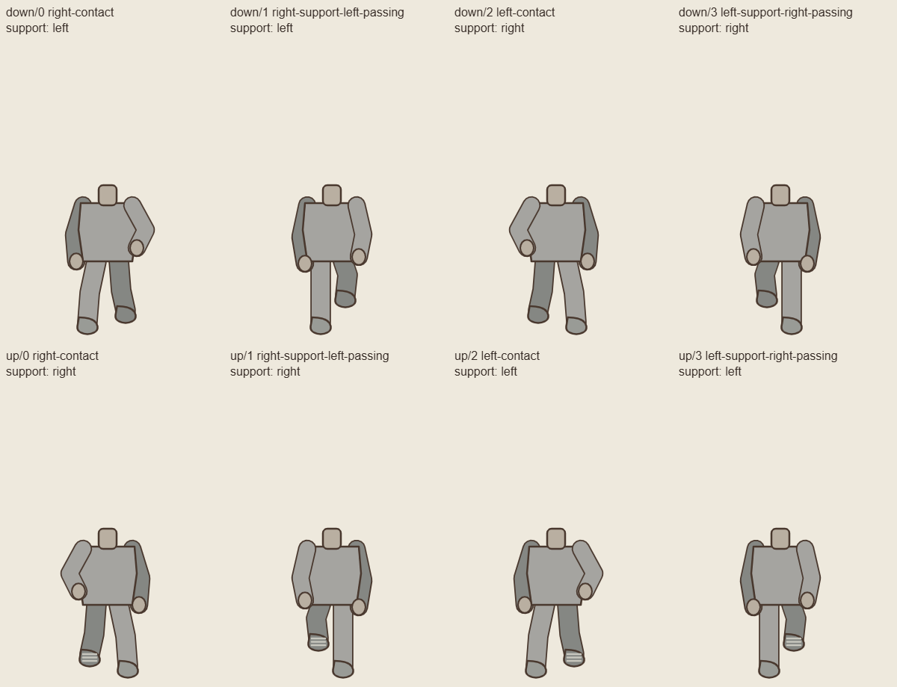

Technical pose diagrams, not replacement game artwork. Garment style and detail still come from the approved idle art. Each guide uses the native 288 × 432 canvas.

Original repeated-foot guides and earlier cardigan evidence